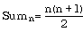
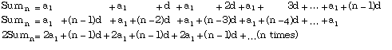
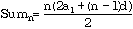
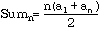

Sometimes, the solution to a problem appears to call for a loop, but closer analysis reveals that the loop can be replaced by a single formula. When this can be done, the code is much more efficient, for just the one formula is evaluated with just a few calculations, rather than many passes through a loop, with one or more computations each time. This situation is common when the repeated computations follow a pattern of some kind. An initial example (and others will be pointed out later in the text) comes from the study of sequences and series, which arise naturally in a variety of applications of mathematics, especially in business
Find the sum of the first 1000 positive integers.
The simplest approach, and one that might be hoped for by a primary teacher trying to keep a bright student out of his way for a while, would be to perform 999 additions, using the pseudocode:
set the sum to zero
set the current number to one
while the current number is less than 1000
add the current number to the sum
increase the current number
print the result
A more enterprising student might notice that if the numbers are written down twice, the second underneath the first and backward, the result can be obtained much more quickly:
Sum = 1 + 2 + 3 + 4 + ... Sum = 1000 + 999 + 998 + 997 + ... 2*Sum = 1001 + 1001 + 1001 + 1001 + ... (1000 times)
Thus twice the desired sum is 1000 * 1001, so the actual sum is half this amount. In general therefore, the sum of the first n positive integers can be found by evaluating the formula

More generally still, one can observe that the sequence 1, 2, 3, 4, 5, ... is just a particular instance of a class of such sequences with a defined starting point and specific amount by which each term is incremented to get the next. Others include:
2, 4, 6, 8, 10, ... 23, 31, 39, 47, ... 100, 201, 302, 403, ...
A sequence a1, a2, a3, a4, ... of terms in which there is a fixed common difference d between successive terms is called an arithmetic sequence.
Such a sequence can be expressed as:
a1, a1 + d, a1 + 2d, a1 + 3d, a1 + 4d, ...
and the pattern makes it clear that a formula for the nth term is
an = a1 + (n - 1)d
By following the example of the consecutive integers, the sum of the first n terms is:

Thus the sum is given by:

Or, since an = a1 + (n - 1)d, this can be expressed as:

It is now a simple matter to write a module to find the nth term, and the sum of the first n terms of an arithmetic sequence, without using any loops at all.
MODULE ArithSeq;
(* Written by R.J. Sutcliffe *)
(* to illustrate replacing loops with formulas *)
(* using P1 Modula-2 for the Macintosh computer *)
(* last revision 1993 02 16 *)
FROM STextIO IMPORT
WriteString, WriteLn, ReadChar, SkipLine;
FROM SWholeIO IMPORT
ReadInt, WriteInt;
VAR
termnum, first, last, difference, sum : INTEGER;
answer : CHAR;
again : BOOLEAN;
BEGIN
(* information on program *)
WriteString ("ArithSeq was written by R.J. Sutcliffe");
WriteLn;
WriteString ("to illustrate replacing loops with formulas");
WriteLn;
WriteLn;
WriteString ("This program computes the specified term ");
WriteString ("and partial sum");
WriteLn;
WriteString (" of the terms of an arithmetic sequence ");
WriteString (" of integers that you specify. ");
WriteLn;
WriteLn;
REPEAT
(* Gather the information from the user *)
WriteString ("Please enter the first term ==>");
ReadInt (first);
SkipLine;
WriteString ("What is the difference between terms? ==>");
ReadInt (difference);
SkipLine;
WriteString ("What is the number of the term you want ==>");
ReadInt (termnum);
SkipLine;
(* computation -- no loops *)
last := first + (termnum - 1) * difference;
sum := termnum * (first + last) / 2;
(* output *)
WriteString ("Term number ");
WriteInt (termnum, 0);
WriteString (" of the sequence is ");
WriteInt (last, 0);
WriteString (", and the partial sum to that point is ");
WriteInt (sum, 0);
(* recycle? *)
WriteLn;
WriteLn;
WriteString ( "Do another sequence? Y or N ==> ");
ReadChar (answer);
again := CAP (answer) = "Y";
SkipLine;
WriteLn;
UNTIL NOT again;
END ArithSeq.
One run produced the results:
ArithSeq was written by R.J. Sutcliffe to illustrate replacing loops with formulas This program computes the specified term and partial sum of the terms of an arithmetic sequence of integers that you specify. Please enter the first term ==>1 What is the difference between terms? ==>1 What is the number of the term you want ==>100 Term number 100 of the sequence is 100, and the partial sum to that point is 5050 Do another sequence? Y or N ==> y Please enter the first term ==>2 What is the difference between terms? ==>5 What is the number of the term you want ==>80 Term number 80 of the sequence is 397, and the partial sum to that point is 15960 Do another sequence? Y or N ==> y Please enter the first term ==>-56 What is the difference between terms? ==>2 What is the number of the term you want ==>34 Term number 34 of the sequence is 10, and the partial sum to that point is -782 Do another sequence? Y or N ==> n